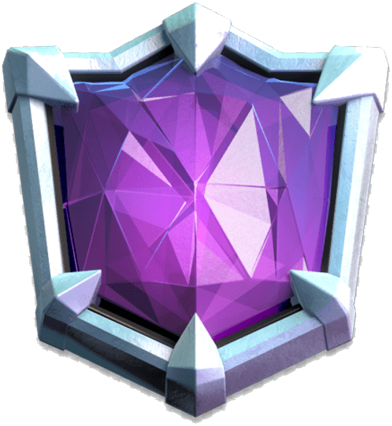

Ultimate Champion
Clash Royale · Path of Legends · World Rank #1661
How rare is Ultimate Champion?
Ultimate Champion is the tenth and final league of Path of Legends, Clash Royale's ranked mode. There is nothing above it. Community estimates put the players who ever reach it at well under 1% of an active base in the tens of millions. But the league badge undersells this run: a best-season finish of #1661 in the world isn't "top 1%"; it's a four-digit position on a global leaderboard. And the screenshot shows it as both previous season and best season: the rank was reached, then held again.
sources: reach-rate estimates · RoyaleAPI profile
The CRL 20-Win Challenge badge
This profile also carries the CRL 20-Win Challenge badge. The challenge is Supercell's official qualifying gauntlet for the Clash Royale League, the game's professional esports circuit: win 20 matches before taking 3 losses, in a bracket where everyone entering is chasing a shot at the pro league. The math is what makes it brutal. A player who wins 70% of their matches, already elite, completes the full run only about 2% of the time per attempt. Finishing it unlocks registration for the CRL qualification stages, and the badge is pinned permanently to the in-game profile and battle banner.
sources: Supercell: the 20-Win Challenge · RoyaleAPI: CRL badges
Straight from the arena
Chess at 3 minutes per game
Clash Royale looks casual and plays brutal: two players, one bridge, and an elixir economy that regenerates in real time. Every match at this level is a compressed exercise in resource management and prediction:
Path of Legends
Ranked resets every season; staying in Ultimate Champion means re-climbing the road again and again. This run finished at #1661 with a 2591 rating.